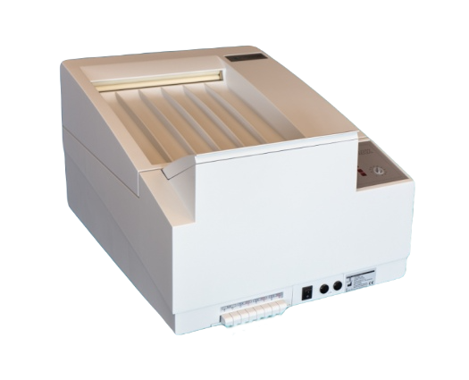

Protec OPTIMAX Table Top Film Processor
Rugged & Reliable Table-Top Automatic X-Ray Film Processor

The OPTIMAX is the world's premier 90 second automatic x-ray film processor.
Designed as a rugged workhorse, the OPTIMAX can handle film volumes from very low to a higher capacity.
The proven design of the OPTIMAX is efficient with energy, water & chemical use, saving the OPTIMAX owner money while delivering outstanding quality images.
The OPTIMAX is manufactured by Protec Medical in Germany in compliance with DIN ISO 9001:2000, IEC, TUV, CE, CSA, and UL quality standards.
The OPTIMAX sets the standard of excellence for 90 second automatic x-ray film processors.
- Lightweight, yet rugged tabletop processor
- 90 second processing speed, leading edge to leading edge
- Energy and water saving design limits run time to when film is actually being processed
- Anti-oxidation and anti-crystallization programs result in chemical savings and outstanding image quality
- Intelligent replenishment sensor limits chemical use resulting in chemical savings
- All components are easily accessible underneath for service
- Temperature control on the front panel for ease of use
- Top film feed and top return for convenience
- Film transport rack design with spring loaded rollers helps eliminate film jam problems found with other brands
- Quality polyurethane & rubber rollers for outstanding image quality and no artifacts
Technical Specifications
The IS-199 incorporates a unique combination of features which make it the Mixer of Choice for both the user and the serviceman.
The Specific Gravity Mixing System allows the user to start a mix anytime.
The mixer responds to the addition of concentrated chemicals and adds the correct amount of water automatically.
All Electronic Components have been chosen for dependability.
Straight-forward circuit designs eliminate the need for circuit boards thereby increasing reliability.
The Low Level Warning System indicates that solution level is 2.0 gallons or less.
The warning system resetsautomatically when the user begins a 5 or 10 gallon mix.
Features
- 1 year parts warranty
- Meets ISO, IEC, CE, TUV, CSA & UL quality standards
- Flame retardant material used for housing
- Made in Germany by Protec GmbH
Features
- Comes complete and ready with all components for tabletop processing
- Levelling legs for uneven surfaces
- Spare parts kit
- 6.6 gallon (25 liter) replenishment tanks with filtering replenishment straws
- Floating lid for developer tank
- Water supply hose
- Tubing and hardware
- Installation, Operating and Parts Manual
220-240VAC/50-60Hz version standard - Price includes 120 volt converter transformer
Product Specifications
- Film Size: 4” x 4” (10 cm x 10 cm) min. to 14” (43 cm) X any length max. Will accept roll film
- Processing Time: 90 seconds (factory set), leading edge to leading edge
- Developer Temp: 82-99 oF (28-37oC), adjustable
- Replenishment: Rates adjustable either 450 ml per 10 sq. ft. (ml/m2) or 600 ml per 10 sq. ft. (ml/m2). Manual pumping selection allows for automatic fill of the internal chemical tanks
- Net Weight (Empty/Filled): 77/110 lbs (35/50 kg)
- Tank Capacity: 1.3 gallons (5.0 liters) in each section: developer, fixer, water
- Film Drying: Warm circulated air, factory set to 149oF (65oC)
- Chemical Storage: 6.6 gallon (25 L) tanks
- Film & Chemistry: Use standard medical X-Ray film and chemistry formulated for automatic medical X-Ray film processors
| Stock # | Price |
|---|---|
| OPTIMAX | $5,995.00 |
| OPTIMAX-STAND | $275.00 |